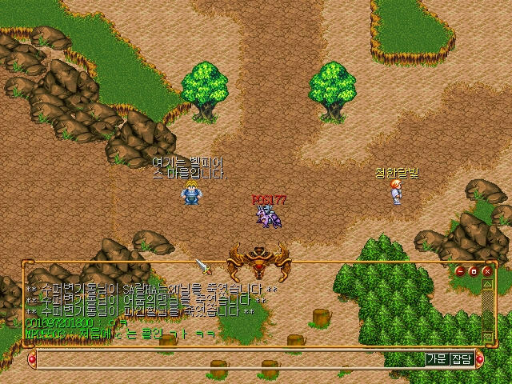
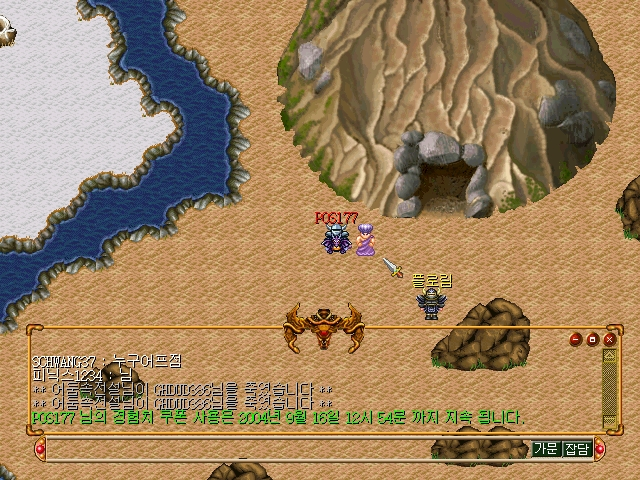
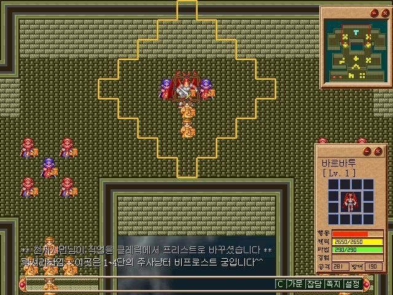

다크세이버 게시판
작성자: 암소소리벗(maru10819)
작성일: 2014-01-29 23:13:00
aa
댓글 6
windstar1921(windstar1921) 2014-01-29 23:51:00
하늘하늘(dkssud6580) 2014-01-30 00:06:00
koumei12(koumei12) 2014-01-30 01:01:00
13(whtjdgus1989) 2014-01-30 01:32:00
러브레터(bluekariss) 2014-01-30 16:36:00
paranoid_7(paranoid_7) 2014-01-30 22:35:00